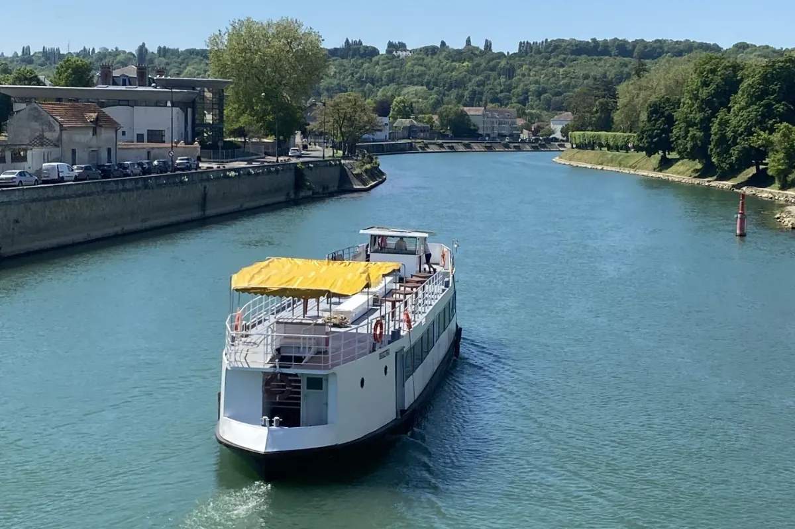
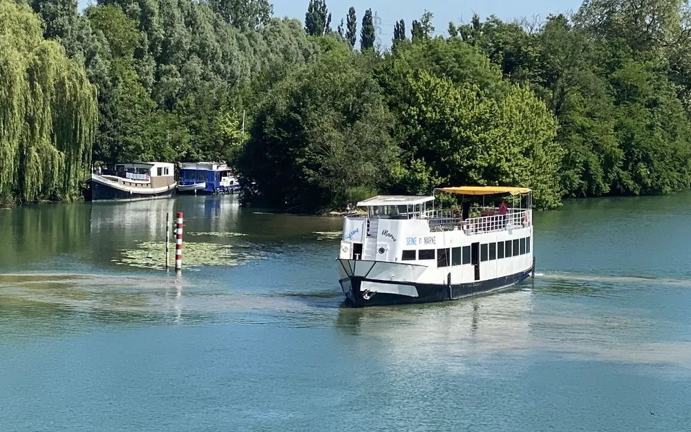
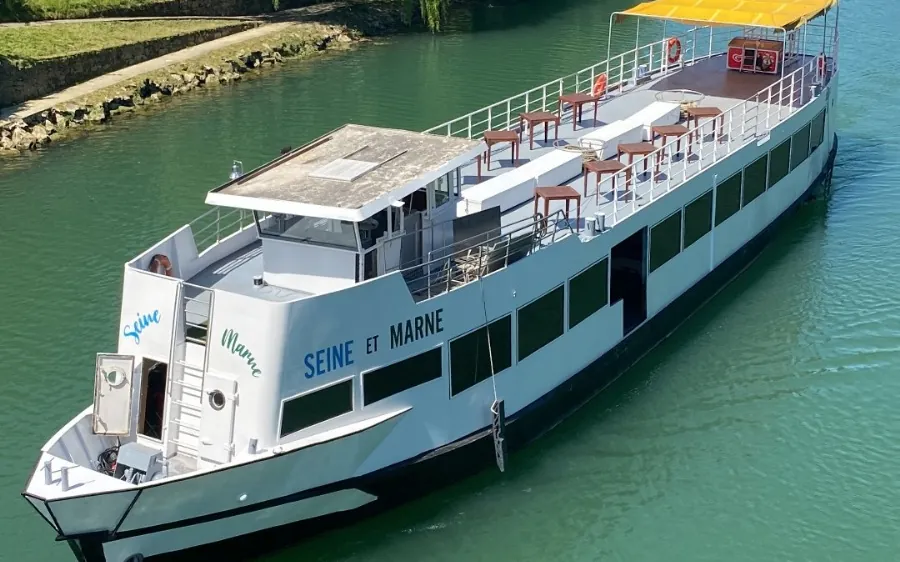
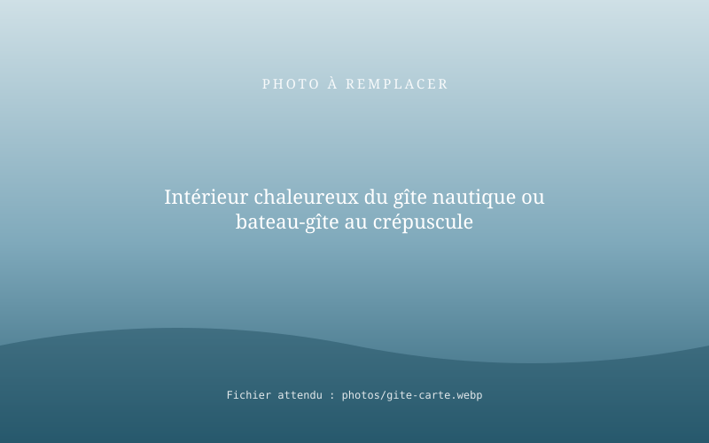
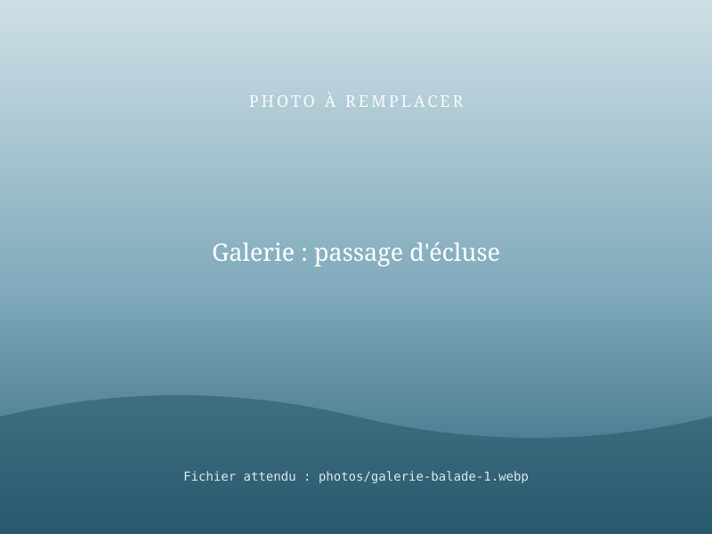
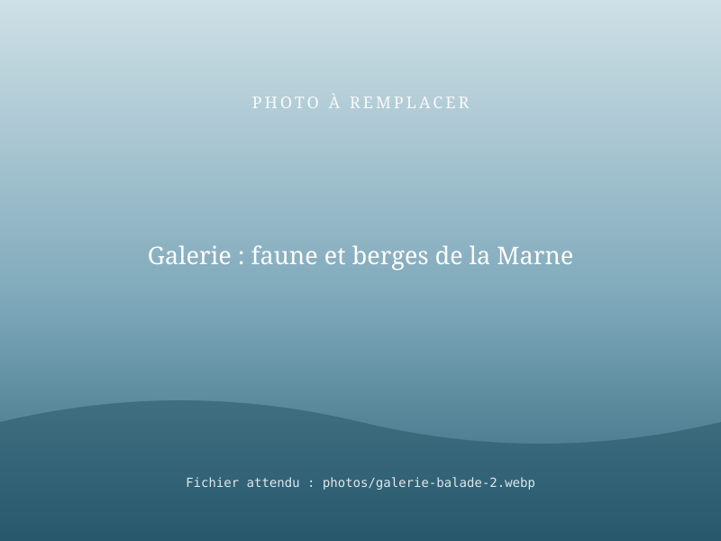
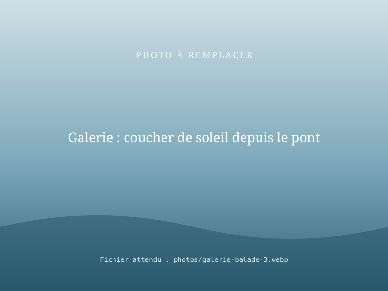

Balades en bateau sur la Seine et la Marne, événements et gîte nautique
RivesEnRêves vous emmène sur la Seine et la Marne à bord du Seine et Marne, un bateau de 150 passagers, pour une balade en famille ou entre amis. Le bateau se loue aussi pour vos mariages, séminaires et événements. Et pour prolonger le moment, dormez à bord de notre gîte nautique.
Le Seine et Marne est actuellement en travaux : contactez-nous pour la date de reprise.

Trois façons de vivre la rivière
Quelques heures sur l'eau, un événement à bord ou une nuit sur la rivière : vous choisissez, la Seine et la Marne s'occupent du décor.

Balade en bateau
À bord du Seine et Marne (150 passagers), une promenade paisible sur la Seine et la Marne, en famille, entre amis ou en groupe.
Découvrir la balade
Mariages, séminaires, événements
Louez le Seine et Marne en entier, jusqu'à 150 invités : mariage, séminaire, fête d'entreprise, anniversaire.
Louer le bateau
Gîte nautique
Un hébergement insolite à bord, amarré au bord de l'eau. Réveil sur la rivière, café sur le pont, silence garanti.
Découvrir le gîteInformations pratiques
| Balade en bateau | Gîte nautique | |
|---|---|---|
| Lieu | La Seine et la Marne · [À COMPLÉTER : point d'embarquement] | [À COMPLÉTER : lieu d'amarrage] |
| Durée | [À COMPLÉTER : ex. 1 h 30] | Une nuit ou plus |
| Capacité | 150 passagers (bateau Seine et Marne) | [À COMPLÉTER : nombre de couchages] |
| Saison | Bateau actuellement en travaux · [À COMPLÉTER : date de reprise] | [À COMPLÉTER] |
| Tarifs | [À COMPLÉTER] | [À COMPLÉTER] |
En images



Ce qu'en disent nos passagers
Les avis ci-dessous seront remplacés par de vrais avis clients (Google Business Profile ou recueillis après les balades).
[À COMPLÉTER : avis client réel n°1]
Prénom, ville, date[À COMPLÉTER : avis client réel n°2]
Prénom, ville, date[À COMPLÉTER : avis client réel n°3]
Prénom, ville, date4 haltes fluviales exploitées sur la Marne de 2019 à 2025 en collaboration avec Coulommiers Pays de Brie Tourisme, dont 2 à La Ferté-sous-Jouarre : nous accueillons des visiteurs au bord de l'eau depuis des années.
Questions fréquentes
Où se déroulent les balades en bateau RivesEnRêves ?
Sur la Seine et la Marne, à bord du Seine et Marne, un bateau de 150 passagers. Le point d'embarquement vous est confirmé lors de la réservation : [À COMPLÉTER : lieu(x) d'embarquement].
Peut-on faire une balade en bateau en famille avec des enfants ?
Oui. Les balades sont pensées pour les familles : rythme calme et gilets de sauvetage à bord. [À COMPLÉTER : âge minimum éventuel, gilets enfants disponibles].
Peut-on louer le bateau pour un mariage, un séminaire ou un événement ?
Oui. Le Seine et Marne se loue en entier, jusqu'à 150 personnes, pour un mariage, un séminaire, un anniversaire ou tout autre événement. Précisez la date, le nombre de personnes et l'occasion dans votre demande.
Les balades en bateau sont-elles ouvertes en ce moment ?
Le Seine et Marne est actuellement en travaux. Contactez-nous pour connaître la date de reprise et réserver dès maintenant.
Qu'est-ce qu'un gîte nautique ?
C'est un hébergement à bord d'un bateau amarré : on y dort au fil de l'eau, avec le confort d'un gîte. Une expérience insolite, au calme, au bord de la Marne.
Que se passe-t-il en cas de mauvais temps ?
La sécurité passe avant tout : si la météo ou le niveau de la rivière ne permettent pas de naviguer, nous vous proposons une autre date. [À COMPLÉTER : conditions d'annulation].
Envie d'une parenthèse sur l'eau ?
Indiquez la date souhaitée, le nombre de personnes et vos envies : nous revenons vers vous pour confirmer.
Idées et conseils
Bientôt sur le blog : « Que faire sur la Marne en famille ? » et « Organiser son mariage sur un bateau ».